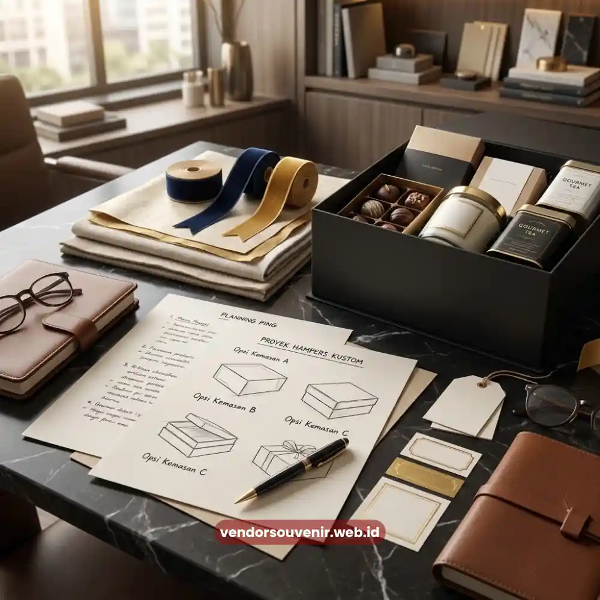
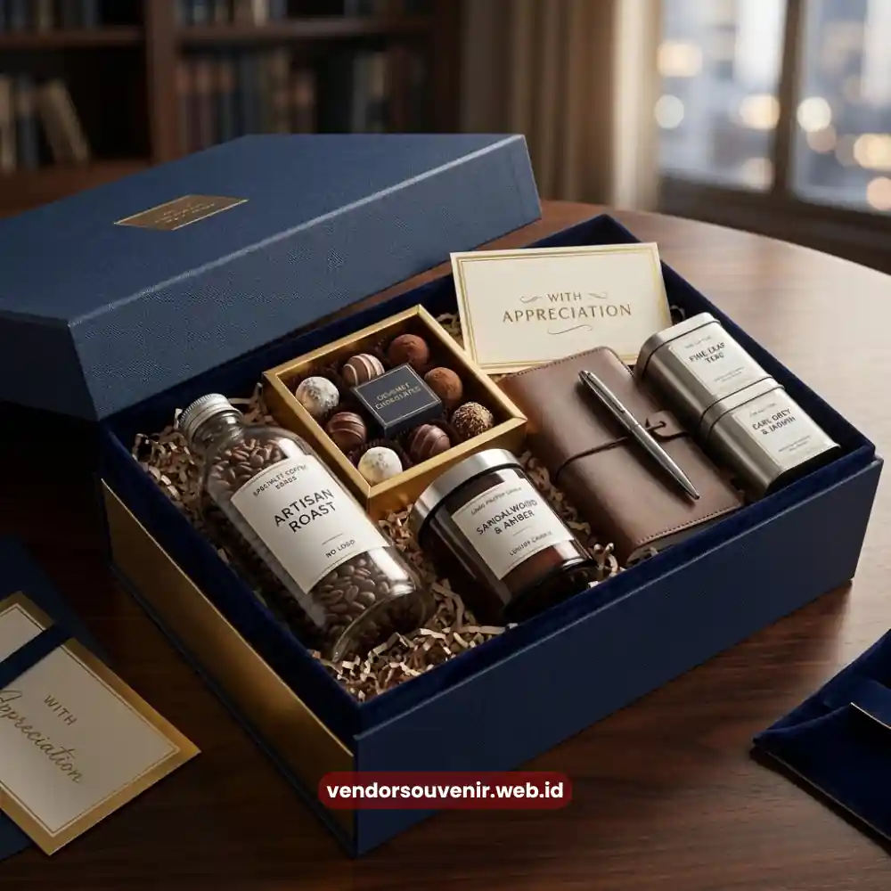

Daftar Isi
Ide isi hampers perusahaan yang berkesan umumnya menggabungkan produk premium, fungsional, dan relevan dengan profil penerima.
Kombinasi ini membuat klien merasa dihargai secara khusus, bukan sekadar menerima hadiah generik.
Semakin relevan isi hampers dengan kebutuhan penerima, semakin besar pula kesan positif yang tertinggal terhadap perusahaan pemberi.
- Isi hampers yang berkesan menggabungkan unsur premium, fungsional, dan personal.
- Relevansi produk dengan profil penerima meningkatkan nilai emosional hadiah.
- Kombinasi makanan, perlengkapan kerja, dan produk lifestyle banyak diminati.
- Sentuhan personalisasi seperti kartu ucapan memperkuat kesan eksklusif.
- Vendor Souvenir membantu menyusun kombinasi isi sesuai kebutuhan perusahaan.
Mengapa Relevansi Isi Hampers Penting bagi Klien Korporat?
Klien korporat umumnya menerima banyak bingkisan dari berbagai mitra bisnis.
Oleh karena itu, hampers dengan isi generik cenderung mudah terlupakan.
Relevansi isi terhadap kebutuhan atau gaya hidup penerima menjadi faktor pembeda yang membuat hampers lebih diingat dan dihargai.
Selain relevansi, kualitas produk di dalam hampers turut memengaruhi persepsi klien terhadap profesionalisme perusahaan pemberi.
Apa Saja Kombinasi Isi Hampers yang Banyak Diminati Perusahaan?
Kombinasi Makanan dan Minuman Premium
Produk makanan dan minuman premium menjadi pilihan klasik karena dapat dinikmati langsung.
Kombinasi ini sangat cocok untuk momen perayaan seperti akhir tahun maupun hari besar keagamaan.
Perlengkapan Kerja Berkualitas
Barang seperti notebook, tumbler, atau organizer meja banyak dipilih karena sangat fungsional.
Produk kategori ini memberi peluang besar untuk menampilkan branding perusahaan secara berkelanjutan saat digunakan sehari-hari.
Produk Lifestyle dan Perawatan Diri
Beberapa perusahaan memilih produk lifestyle seperti aromaterapi atau aksesori ringan untuk memberi kesan hangat.
Ini memberikan sentuhan personal yang sangat pas, terutama untuk hadiah bertema apresiasi klien.
Sentuhan Personal Berupa Kartu Ucapan
Kartu ucapan dengan pesan yang ditulis khusus memberi nilai emosional tambahan yang tak ternilai harganya.
Elemen sederhana ini sering menjadi faktor yang membuat penerima merasa hampers tersebut dipersiapkan dengan penuh perhatian.

Kombinasi Produk Hampers Korporat
Bagaimana Menentukan Kombinasi Isi yang Sesuai dengan Profil Penerima?
Penentuan kombinasi isi sebaiknya mempertimbangkan posisi dan hubungan bisnis penerima dengan perusahaan.
Klien strategis biasanya menerima kombinasi produk dengan kualitas lebih tinggi untuk meninggalkan kesan mendalam.
Sementara itu, relasi bisnis reguler dapat menerima kombinasi yang lebih sederhana namun tetap rapi dan berkesan.
Selain posisi penerima, konteks acara juga turut memengaruhi pemilihan isi dari hampers yang diberikan.
Hampers untuk momen perayaan cenderung berisi produk yang lebih bernuansa perayaan dan sukacita.
Sedangkan hampers apresiasi kerja sama jangka panjang dapat lebih menonjolkan unsur fungsional dan berkelas.

Solusi Gift Set dari Vendor Terpercaya
Kesimpulan
Ide isi hampers perusahaan yang berkesan lahir dari kombinasi produk premium, fungsional, dan sentuhan personal yang tepat.
Semakin relevan dan rapi kombinasi tersebut disusun, semakin kuat pula kesan profesional yang tertanam di benak klien.
Butuh Bantuan Merancang Kemasan Hampers?
Tim ahli kami siap membantu Anda menyusun paket hadiah eksklusif yang menarik.
Pilihan barang akan disesuaikan dengan ketersediaan budget dan kebutuhan Anda.
Seluruh desain kemasan akan kami selaraskan dengan identitas visual perusahaan Anda.
Dapatkan penawaran harga terbaik untuk pesanan massal!
FAQ
Apa isi hampers yang paling cocok untuk klien korporat?
Kombinasi makanan premium, perlengkapan kerja, dan sentuhan personal seperti kartu ucapan umumnya menjadi pilihan yang paling berkesan untuk klien korporat.
Apakah isi hampers perlu disesuaikan dengan posisi penerima?
Ya, klien strategis biasanya menerima kombinasi produk dengan kualitas lebih tinggi dibanding relasi bisnis reguler agar kesan yang diberikan lebih sesuai.
Mengapa kartu ucapan penting dalam hampers perusahaan?
Kartu ucapan memberi sentuhan personal yang membuat penerima merasa hampers dipersiapkan dengan perhatian khusus, bukan sekadar formalitas bisnis.
Maroon Souvenir
Partner Corporate Gift terpercaya di Indonesia. Berpengalaman melayani ratusan perusahaan sejak 2018.
Lihat Portofolio Kami